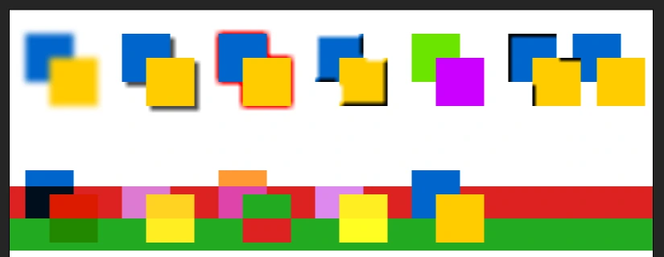
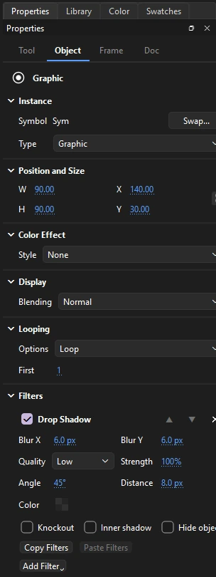

Symbols
Filters, blends and color effects
Symbol instances can be recolored, blended with what is behind them, and given filters, all without touching the symbol itself. Every one of these settings can change from keyframe to keyframe and be tweened.

Color effects
Select an instance, then choose a Style under Color Effect on the Object tab:
- None
- The symbol's own colors.
- Brightness
- Toward black or white, from -100% to 100%.
- Tint
- Toward a color you choose, by a percentage. Set the color with the swatch or by its Red, Green and Blue values.
- Alpha
- Transparency, from 0% (invisible) to 100% (solid).
- Advanced
- Separate multipliers and offsets for red, green, blue and alpha, for any color change the others cannot make.
Color effects tween smoothly, so a character can fade in or flush red over a few frames. In a classic tween, set a different effect on each keyframe. In a motion tween, move the playhead into the span and change the effect there: Phoenix keys the color curve on that frame.
Blend modes
Under Display, Blending sets how an instance mixes with what is beneath it:
| Mode | Effect |
|---|---|
| Normal | Covers what is beneath |
| Multiply | Darkens, like layers of ink; good for shadows |
| Screen | Lightens, like projected light; good for glows |
| Lighten, Darken | Keeps the lighter or darker of the two colors |
| Overlay, Hard Light | Adds contrast, multiplying darks and screening lights |
| Add, Subtract | Adds or subtracts the colors |
| Difference | The difference between the colors |
| Invert | Inverts what is beneath, in the instance's shape |
| Layer | Composites the instance's contents as one image first, so transparency and the two modes below apply to the whole |
| Alpha, Erase | Used inside a Layer instance: Alpha keeps only what the artwork covers, Erase cuts the artwork's shape out |
Filters
Filters add effects such as shadows and glows to movie clips and buttons. They appear in the Filters section of the Object tab.

- Click Add Filter and choose one. An instance can have several, applied top to bottom.
- Use the checkbox to turn a filter off without losing its settings, the arrows to change the order, and × to remove it.
Quality can be Low, Medium or High. Higher quality looks smoother and takes longer to draw.
| Filter | Settings |
|---|---|
| Blur | Blur X and Y, quality |
| Drop Shadow | Blur, strength, angle, distance, color, knockout, inner shadow, hide object |
| Glow | Blur, strength, color, knockout, inner glow |
| Bevel | Blur, strength, angle, distance, shadow and highlight colors, inner, outer or full |
| Gradient Glow | Like Glow, colored by a gradient you edit on a bar |
| Gradient Bevel | Like Bevel, colored by a gradient |
| Adjust Color | Brightness, contrast, saturation and hue |
Filters tween the same way: between classic tween keyframes, and in motion tweens, where changing a filter setting on a frame inside the span keys it there. A graphic instance shows the Filters section only when it already has filters, as one in an opened FLA file may.
Copy Filters and Paste Filters pass an instance's filters to another. Under Presets, Save As... keeps them under a name, choosing a preset puts its filters on the selected instance in place of its own, and Delete removes one. Presets are kept with Phoenix, for every document.
Effect layers
To shade part of a layer with a tone, highlight or glow whose shape you draw, rather than change a whole instance, use an effect layer. See Tone, highlight and glow.